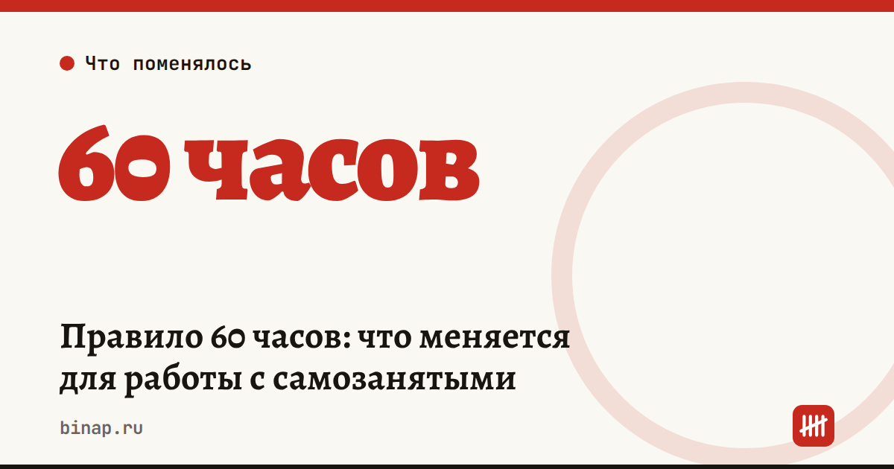

Правило 60 часов: что меняется для работы с самозанятыми

С 1 октября 2026 года вместе с законом о платформенной экономике начинает работать критерий «60 часов». Он нужен, чтобы через платформы не оформляли штатную работу под видом самозанятости. Сам по себе он не запрещает работать с самозанятыми: важно, как выстроены отношения.
Коротко
- Больше 60 часов в месяц на одного заказчика шесть месяцев подряд — платформа приостанавливает заказы от него этому исполнителю на два месяца.
- Лимит считается по каждой паре «исполнитель — заказчик», число заказчиков не ограничено.
- Первые ограничения возможны не раньше весны 2027 года.
- Суды смотрят на признаки трудовых отношений: обязательный график, подчинение правилам, постоянная работа на одного заказчика.
Сроки, изменения и разборы для ИП и самозанятых — каждое утро в Telegram и MAX. Подпишитесь, чтобы не пропустить.
Как работает правило:
- Если исполнитель через платформу работает на одного заказчика больше 60 часов в месяц шесть месяцев подряд, платформа обязана приостановить приём заказов от этого заказчика этому исполнителю на два месяца.
- Если в одном из месяцев вышло меньше 60 часов, отсчёт начинается заново.
- Количество заказчиков не ограничено — лимит считается по каждой паре «исполнитель — заказчик».
- Правило касается работ и услуг через платформы. На продажу товаров и на прямые договоры с самозанятыми вне платформ оно не распространяется.
- Ставки НПД и годовой лимит дохода 2,4 млн ₽ не меняются.
Когда это почувствуют: отсчёт идёт с октября 2026 года, поэтому первые ограничения возможны не раньше весны 2027-го.
- Больше 60 часов в месяц
- Пауза: заказы от этого заказчика недоступны
Если хотя бы в одном месяце вышло меньше 60 часов, отсчёт начинается заново.
Таблица с данными
| Месяц | Что происходит |
|---|---|
| окт | больше 60 часов |
| ноя | больше 60 часов |
| дек | больше 60 часов |
| янв | больше 60 часов |
| фев | больше 60 часов |
| мар | больше 60 часов |
| апр | пауза |
| май | пауза |
Что сделать, если вы нанимаете самозанятых через платформы:
- Выпишите исполнителей, которые работают на вас постоянно, и посчитайте их часы в месяц.
- Если кто-то стабильно выходит за 60 часов — решите заранее: оформить его в штат, перевести на договор с ИП или распределить работу между несколькими исполнителями.
- Не пытайтесь обходить правило «переброской» исполнителя между платформами: налоговая и раньше переквалифицировала такие отношения в трудовые, с доначислением НДФЛ и взносов.
- Проверьте договор: исполнитель сам выбирает время и объём работы, нет обязательного графика, штрафов «как для сотрудника» и подчинения внутренним правилам.
Пример из судебной практики
По данным КонсультантПлюс, три инстанции отказали курьеру-самозанятому в признании отношений трудовыми (определение Четвёртого кассационного суда общей юрисдикции от 21.10.2026 № 88-25657/2026). Заказчик публиковал слоты доставки, а исполнители выбирали их сами; суд счёл это справочной информацией, а не обязательным режимом работы. Это решение по одному делу, а не общее правило, но оно показывает, на что смотрят суды.
| Похоже на трудовые отношения | Похоже на работу с самозанятым |
|---|---|
| обязательный график и смены | исполнитель сам выбирает слоты и объём |
| подчинение правилам внутреннего распорядка | результат и сроки по конкретному заказу |
| работа только на одного заказчика годами | несколько заказчиков |
| оплата «окладом» каждый месяц | оплата за выполненные заказы |
Как ФНС ищет подозрительных самозанятых по чекам — в статье ФНС ищет самозанятых по отменённым чекам. Как исполнителю зарегистрироваться правильно — как стать самозанятым за 10 минут.
Частые вопросы
Правило 60 часов касается прямых договоров с самозанятыми? Нет, только работ и услуг через платформы. Но признаки трудовых отношений налоговая проверяет и по прямым договорам.
Что будет, если отношения признают трудовыми? Заказчику доначислят НДФЛ и страховые взносы как за сотрудника, плюс пени и штрафы.
Можно ли продолжить работу с исполнителем после двухмесячной паузы? Да, после паузы заказы снова доступны, но если отношения по сути трудовые, разумнее оформить человека в штат.